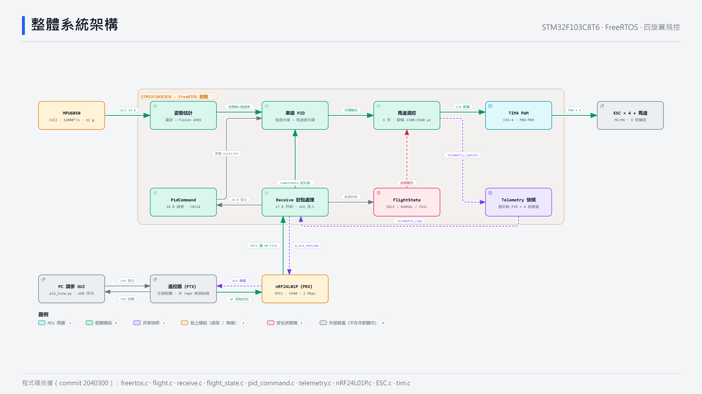
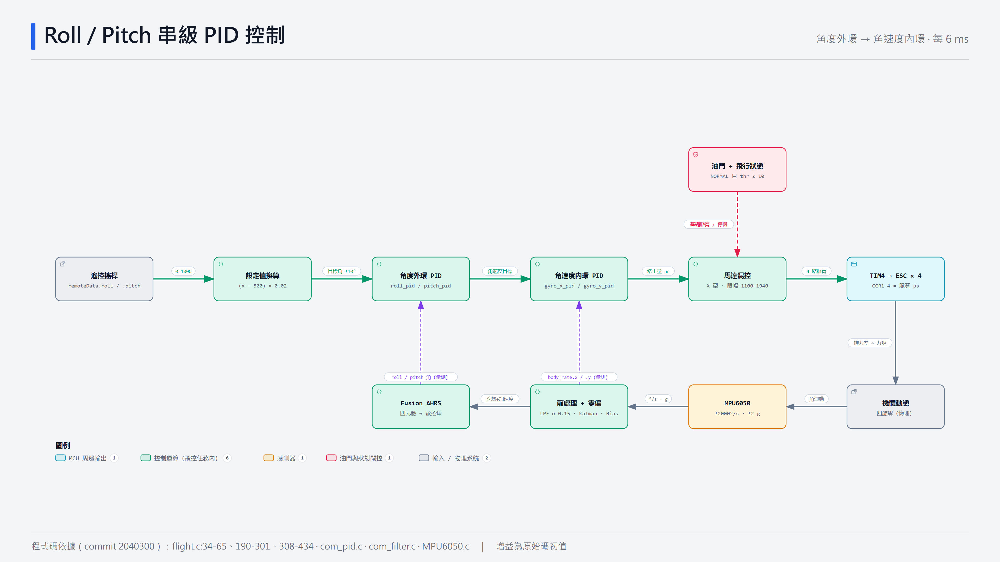
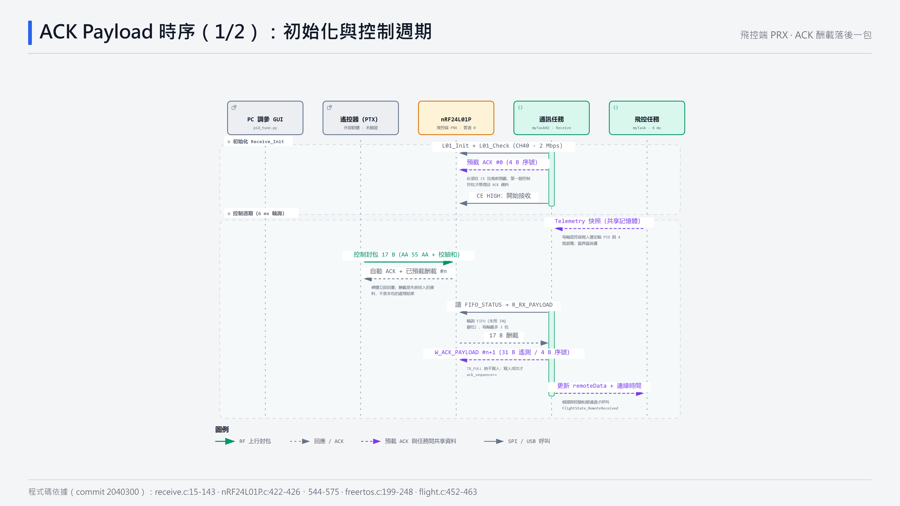

從整體架構開始，再看執行期的任務分工、控制核心，最後是無線通訊的細節。 每張圖都依 commit 2040300 的原始碼繪製；在圖中點選節點可以看到引用的檔案與行號。
2040300

感測 → 姿態估計 → 串級 PID → 混控 → TIM4 PWM，搭配 nRF24L01P 遙控與遙測回傳。
三個任務以全域變數與臨界區交換資料，沒有使用 Queue 或 Semaphore。

角度外環輸出角速度目標，內環以 body_rate 回授，每 6 ms 執行一次。

ACK 酬載在收包前預先排入，所以回傳內容一律落後一包。